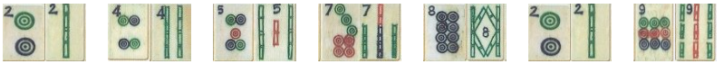
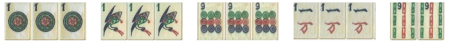
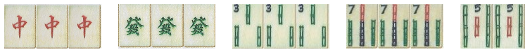

41 MAH JONG HANDS
(As listed in Max Robertson's book
, 2007 edition)
1.ORDINARY hand is made up of 4 pung/kong/chow's and a pair. All tiles must be from one suit.
:: clean; form: PKC's (one chow only)

2.PURITY hand is an ordinary hand with no winds or dragons.
::super-clean; form: PKC's (one C)

3.ALL KONGS hand has 4 kongs in one suit with winds and/or dragons and a pair.
::clean; form: K's

4.Buried treasure Similar to ordinary hand but cannot pick up discards,
i.e. the hand is entirely concealed. Also must have more than one chow.
::clean; form: PKC's (2 c's); no discards allowed

5.MIXED PUNGS is composed of pungs and a pair of mixed suits with winds and/or dragons.
No discards, i.e. entirely concealed.
::mixed; form Pungs; no discards

6.ALL HONOUR HAND. Pungs/kongs of 1's & 9's of any suit , winds/dragons plus pair of honours.
(note:- 1's, 9's, winds, dragons are all honour tiles).
::mixed terminals & WD; form: PK's

7.Chinese odds. 4 pungs/kongs and a pair; only odd numbers of one suit
::super-clean (odds) ; form: PK's

8.Wriggling snake A run of tiles 1 to 9 in one suit only + NEWS + and any one of these 13
tiles to be paired. Last tile picked up can be a discard.
:: clean ; form: run of 9 + NEWS + 1 (matching any of 13)

9.Sparrow's sanctuary 2 pairs of 1 bamboos + 5 pairs of green bamboos (2,3,4,6,8).
Only the last tile can be a discard.
:: bamboos (1's and greens); form: 11 11 and 5 other pairs

10.Dragonfly One each of the dragons. A pung/kong of each of the 3 suits plus a pair of any suit.
:: dragons & all three suit ; form: GRW + PK1+PK2+PK3 + any pair

11.Knitting. 7 pairs of two suits only, all but the last from the wall.
:: two suits - no WD ; form: identical 7-digit numbers in two suits.
eg: 2445689 (in bamboos) and 2445689 (in circles)

12.Tripple knitting. Four sets of 3 tiles and a knitted pair.
:: 3 suits -- no WD; form: three identical 4-digit numbers, one in each suit.
e.g: 2358 (in bamboos) +2358 (in circles) + 2358 (in characters) + 11 (different suits)

13.ALL PAIR. Made up of 7 pairs in one suit with winds and/or dragons.
All but the last taken from the wall.
::clean ; form: 7 identical pairs

14.ALL PAIR HONOUR. Made up of 7 pairs of honour tiles (1, 9, WD).
:: 1's & 9's and WD (mixed suits) & WD ; form: 7 identical pairs ; all but last from the wall

15.ALL PAIR JADE. Made up of a pair of green dragons plus 6 pairs of green bamboos (2,3,4,6,8)

16.ALL PAIR RUBY JADE. Mde up of a pair of green dragons, a pair of red dragons + 5 pairs of bamboos.
::bamboos & dragons ; form GG + RR + 5 pairs of bams

17.HEAVENLY TWINS. Seven pairs of tiles all in one suit; no winds or dragons.
::superclean

18.Heavenly paradise. A pung/kong
of each of the dragons plus a pung/kong of the wind of the round
when it
is the players own wind, a pair of any wind. A bouquet of flowers must
also be held.

19.Unique wonder. One of each of the honour tiles plus any tile paired. All from the wall except the last.

20.Lily of the valley. A pung/kong
of green and white dragons. 2pungs/kongs of green bamboos (2,3,4,6,8)
plus a pair of green bamboos. All tiles may be punged from a discard.

21.Imperial jade hand. An all
green hand made up of pungs/kongs of green dragons with pungs/kongs
and a
pair of green bamboos and/or a chow if desired.

22.Royal ruby hand. Similar to the jade hand, but this time using the red dragons and red bamboos (1,5,7,9)

23.Windy dragons. 2 pungs (not
kongs) of any of the dragons plus a pair of each of the winds.
The
dragons may be punged from a discard but the pairs of winds must be
drawn from the wall.
The last tile to complete the hand may be taken
from a discard.

24.Windy ones. A pung/kong of the ones in each suit and one each of the winds plus any wind paired.

25.Windy nines. Similar to windy ones ,but uses nines of each suit.

26.Gates of heaven. One suit only
with no winds or dragons. All tiles from the wall except the last.
Pung
of 1's, pung of 9's and a run 2 to 8 plus a pair of any of the tiles 2
to 8.

27.A run, pung and a pair. One suit only with no winds or dragons. Run 1 to 9 , a pung and a pair.
Each tile from the wall except the last.

28.Heads and tails. Pungs/kongs of 1's and 9's of any of the three suits and a pair of 1's or 9's. No winds or dragons.

29.All winds and dragons. Pungs/kongs and a pair of winds and dragons only, no suit tiles.

30.Three great scholars. Pungs/kongs of all three dragons plus a kong/pung/chow and a pair of a suit and/or winds.

31.The four blessings. Pungs/kongs of each of the four winds plus a pair of anything.

32.Heaven's grace. This hand is when east wind picks up his original 14 tiles and finds that he hold a Mah Jong.
Any Mah Jong hand may apply.
33.Earth's grace. This applies to anyone who is fishing with his original 13 tiles and picks up the first discard by east wind to go Mah Jong.
Any Mah Jong hand, which allows a pick up from a discard, may apply .
34.Red lantern. Pung/kong of red dragons, pung/kong of own wind, run of 1 to 7 in any suit plus any
of the suit tiles (1-7) to be paired.

35.Red lily. A pung/kong of white dragons, pung/kong red dragons, 2 pungs/kongs of red bamboos (1,5,7,9) and a pair of red bamboos.

36.Plucking the plum blossom from the roof.
This is when a player who is fishing for 5 circles picks this up from
a
lose tile from the wall to make Mah Jong. i.e that is after making a
kong or picking up a flower (bonus tile).
37.Picking the moon from the bottom of the sea.
This is when a player is fishing for 1 of circles and picks this tile when it is the last tile on the wall.
38.Ruby jade. A pung/kong of red and green dragons, a pung/kong of green bamboos,
a pung /kong of red bamboos and a pair of any bamboo.

39.Windy chows. A chow in each suit plus one of each wind with any wind paired.

40.Gertie's garter. 1 to seven in two suits.

41.Greta's garden. A run of 1 to 7 (of any one suit) plus 1 of each wind and one of each dragon.